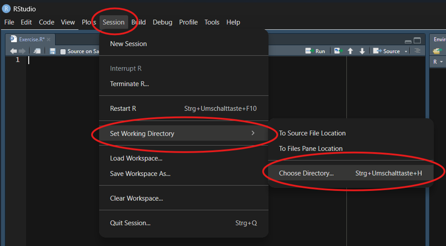
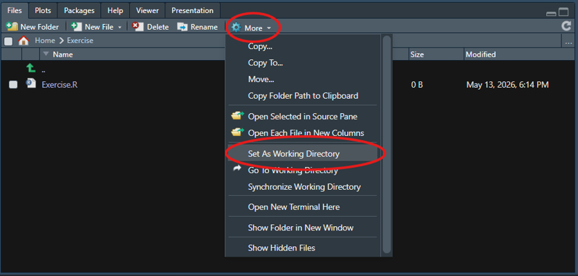
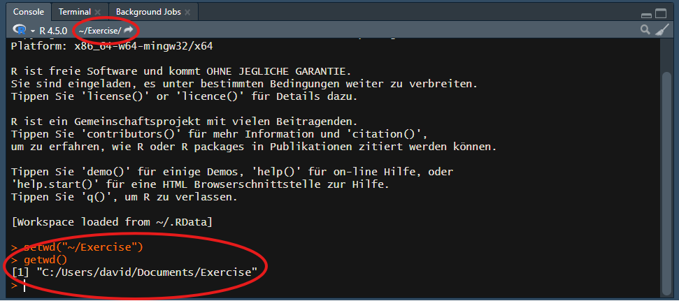
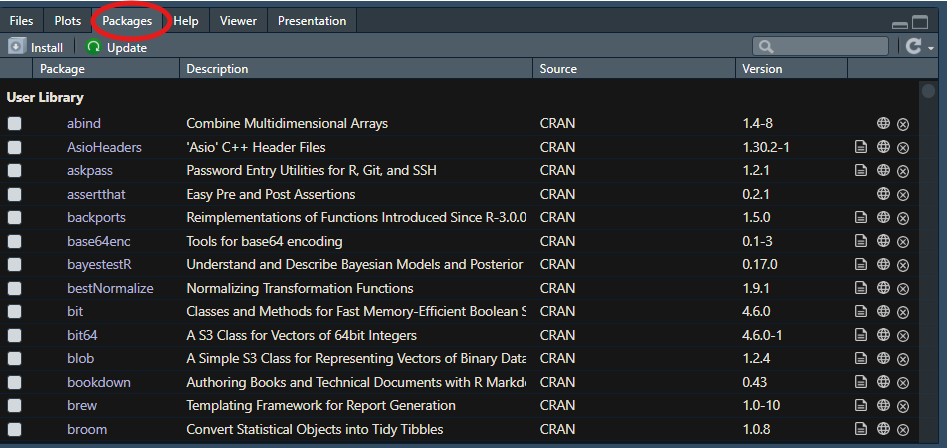
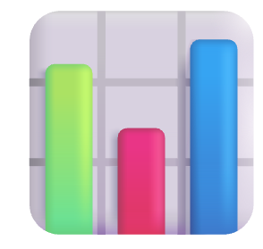
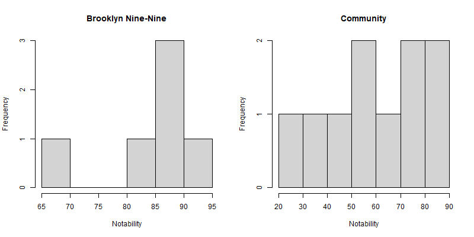

Introduction to R: Part II
30/09/2026
Prerequisites
Important
Before completing this session, please carefully read about the prerequisites.
| Prerequisite | Description | Where to find it |
|---|---|---|
| R and RStudio installed | Latest versions of both R and RStudio | Download RStudio |
| Accessibility sheet for computers | Fundamentals of computer literacy | Download |
| Basic R skills | Introduction to R - Part I | Access here |
- R: https://www.r-project.org/
Questions from previous sessions
Are there any open questions regarding Introduction to R - Part I?
Let’s refresh our memories!
Which of the following creates an object named my_data containing the number 42?
my_data == 42my_data <- 42my_data < - 4242 <- my_data
What is the result of the following logical comparison?
TRUE
FALSE
Error
How do you access a column named age from a data frame called people_data?
people_data[age]
people_data(age)
people_data$age
age$people_data
Before we start: Survey time!
What is your level of familiarity with “Packages” in R?
- I have never heard of them.
- I have heard of them but never installed or loaded one.
- I have basic experience installing and loading them.
- I am very familiar and use them regularly.
Have you ever imported a dataset (e.g., an Excel, CSV, or SPSS file) into a statistical software program?
- No, never.
- Yes, using menus (point-and-click).
- Yes, using code/commands.
How familiar are you with creating data visualizations (e.g., histograms or scatter plots)?
- I have never done this before.
- I have done it using point-and-click tools (e.g., Excel or SPSS).
- I have done it using code (e.g., in R or Python).
Discussion of survey results
What do we see in the results?
Moving forward: From Part I to Part II
- Part I (the basics):
- R as a calculator
- Data types
- Basic functions
- Writing basic scripts
- Part II (the application): Transitioning from calculating to analyzing
- Understanding where files are saved (working directories).
- Using tools built by others (packages).
- Bringing in real data (importing & inspecting).
Learning objectives
At the end of this session, you will be able to…
- Identify and set the correct working directory on your computer
- Install and load R packages to extend R’s functionality
- Import external data into the R environment
- Inspect data structures and extract specific columns
- Compute basic statistical summaries on a dataset
- Visualize data distributions using simple histograms
Key terms and definitions
- Working directory
- Package
- Dataframe
- Subsetting
Key terms and definitions
- Working directory: The default folder on your computer where R looks for files to read and where it saves your output.
- Package: A collection of additional R functions, data, and code that extends the basic capabilities of R.
- Dataframe: A table-like structure in R where rows represent observations and columns represent variables.
- Subsetting: The process of extracting a specific portion of a dataset, such as selecting specific columns or filtering rows.
The working directory
What is the working directory?
- The working directory (WD) is the default folder on your computer.
- It is the location where R looks for files to read.
- It is the location where R saves files you “produce” (e.g., plots, exported data).
- Rule: Always verify your working directory before beginning an analysis to get an idea in which environment you are in.
Setting the working directory (I)
Method 1: Using the top menu bar in RStudio
- Click Session
- Hover over Set Working Directory
- Select Choose Directory…
- Navigate to your desired folder and click Open.

Open RStudio on your own machines. We will use it for later exercises.
Setting the working directory (II)
Method 2: Using the output pane (bottom right in default RStudio layout)
- Navigate to your desired folder in the output pane.
- Click the More button (gear icon).
- Select Set As Working Directory.

Checking the working directory
Verify the current working directory by looking at the top of the console pane (bottom left):

Tip
Alternatively, type getwd() in the console and press Enter to print the exact working directory path.
Practical exercise 1
Setting the working directory
Packages
What are packages?
- R comes with many built-in functions (Base R)
- Packages provide thousands of additional, specialized functions
- They are created and shared by the R community to extend functionality
Installing packages
- Packages must be installed once (or after updating R).
- Use the
install.packages()function. The package name must be in quotation marks.
- Alternatively: Use the Packages tab in the output pane (bottom right) of RStudio and click Install.

Loading packages
- Once installed, a package must be loaded every time you open a new R session.
- Use the
library()function. Quotation marks are not required here.
Practical exercise 2
Packages
Practical exercise 2: Solution
This is what you should add to your R script:
Getting started with data

Preparation to work with data
- To start analyzing data, we first need to download it to our local machine.
- Click here to download the
characters.rdsfile use the link below.
Practical exercise 3
Setting up the data
Loading data into R
Once your working directory is set, you can load your data into RStudio. Check the file extension:
.rdsfiles: R’s native data format. We use thereadRDS()function to load them..csvfiles: The most common text-based data format. Usually loaded with functions from thereadrpackage.- Other formats (SPSS, Excel, SAS): Require specific packages (e.g., the
havenpackage you installed earlier!).
Point-and-Click Import
You don’t always have to write the code from scratch! You can go to File \(\rightarrow\) Import Dataset in the top menu to point-and-click your way through the import process. RStudio will even generate the correct code for you.
Practical exercise 4
Loading the data
Practical exercise 4: Solutions
This is what you should add to your R script:
Inspecting data structures
Before analyzing data, you must familiarize yourself with its structure. Built-in functions allow you to verify variables and data types:
names(): Returns the column names.str(): Displays the internal structure (number of rows/columns, data types, and the first few values of each variable).head(): Returns the first six rows of the dataset for a quick preview.summary(): Provides a brief statistical summary of each variable (adapts output based on data type).
Codebooks
Variable names are often abbreviated. It is highly advisable to use a codebook for precise definitions. Check out our training material on data dictionaries: https://lmu-osc.github.io/data-documentation-validation-R/02-data-dictionaries/page1.html to learn more!
Practical exercise 5
Inspecting the dataset
Question: Based on the console outputs, can you guess what the data in this dataset is about?
Practical exercise 5: Solutions
This is what you should add to your R script:
Pre-break quiz
1. What is the primary purpose of the Working Directory in RStudio?
- It is the only folder where you are allowed to install R.
- It is the default folder where R looks for files to read and saves outputs.
- It is a specific R package used for data manipulation.
- It is the console pane where R executes commands.
2. Which function is used to load an already installed package into your current R session?
install.packages()load.package()open()library()
3. Which command correctly loads an .rds file named characters.rds into an object named my_data?
my_data <- readRDS("characters.rds")readRDS <- my_data("characters.rds")my_data == readRDS("characters.rds")my_data <- read_csv("characters.rds")
Which function provides the internal structure of a dataset, including the number of rows/columns and the data types of each variable?
names()head()summary()str()
What does the head() function output when applied to a dataset?
- The column names of the dataset.
- The first six rows of the dataset.
- A statistical summary of the numeric variables.
- The total number of variables in the dataset.
Break! 15 minutes
Post-break quiz discussion
What do we see in the results?
Data exploration
Accessing and subsetting columns
As discussed in Part I, we can use indexing tools ($ and []) to access specific parts of our data. In real-world analysis, we apply this to extract entirely new subsets.
- Accessing a column: Just like in Part I, use the
$operator to isolate a single variable (e.g.,characters$uni_name). - Filtering rows: Use
dataframe[condition, ]to select specific rows while keeping all columns. - Logical operators: Build conditions using
==(checks for exact equality) and|(logical OR, meaning either condition can be true). - Preserving data: Always assign your subset to a new object (e.g.,
relevant_data <- ...). Overwriting the original object deletes your raw data from the environment.
Practical exercise 6
Subsetting by conditions
Syntax Hint
Remember to specify the data frame for each condition (e.g., data$column == "A" | data$column == "B").
Practical exercise 6: Solutions
This is an example of what you could have added to your R script:
Basic summary functions
After isolating the relevant data, we can compute descriptive statistics for specific variables.
- Numeric variables: We can apply functions like
mean()orsd()to a single column using the$operator (e.g.,mean(data$column)). - Categorical variables: We can use the
table()function to count the frequency of specific text or factor values. - Combined operations: We can subset rows and select a specific column simultaneously within a function using
dataframe[condition, "column_name"].
Practical exercise 7
Comparing group means
Question: Which show features characters with a higher average notability?
Syntax Hint
To compute the mean for a subgroup, place the row condition before the comma, and the target column name after the comma: mean(data[condition, "column_name"]).
Practical exercise 7: Solutions
This is an example of what you could have added to your R script:
# Basic summary functions
mean(relevant_data$notability)
sd(relevant_data$notability)
# Mean notability for Brooklyn Nine-Nine
mean(relevant_data[relevant_data$uni_name == "Brooklyn Nine-Nine", "notability"])
# Mean notability for Community
mean(relevant_data[relevant_data$uni_name == "Community", "notability"])Simple plotting: Histograms
Beyond calculating numbers, we can visualize our data to gain insights quickly. A great starting point for numeric data is a histogram.
- Visualizing distributions: A histogram groups numeric data into “bins” and shows the frequency (or count) of values falling into each bin.
- The
hist()function: We apply this function directly to a numeric vector to generate a plot in the bottom-right Plots pane of RStudio. - Customizing plots: You can add arguments like
mainfor the title andxlabfor the x-axis label to make your plots easier to read. - Why it matters: While means and standard deviations tell us the average, a histogram shows us the actual shape of the data (e.g., are most values clustered in the middle, or skewed to one side?).
Practical exercise 8
Visualizing distributions
Question: By looking at the plots, how do the distributions of the two shows compare?
Side-by-side plots hint
Run par(mfrow = c(1, 2)) before creating your histograms. This tells R to split the plotting window into 1 row and 2 columns so we can easily compare both graphs next to each other!
Practical exercise 8: Solutions
This is an example of what you could have added to your R script:
# Simple Plotting / Histograms
# Set up the plotting area to show 2 plots side-by-side
par(mfrow = c(1, 2))
# Histogram for Brooklyn Nine-Nine
hist(relevant_data[relevant_data$uni_name == "Brooklyn Nine-Nine", "notability"],
main = "Brooklyn Nine-Nine",
xlab = "Notability"
)
# Histogram for Community
hist(relevant_data[relevant_data$uni_name == "Community", "notability"],
main = "Community",
xlab = "Notability"
)Practical exercise 8: R output

Best practices and context
Common mistakes and troubleshooting
Errors are a normal part of programming. When R throws an error, check for these common culprits first:
- Wrong capitalization: R is strictly case-sensitive.
Charactersis not the same ascharacters. - Forgetting quotation marks: Text values and file names must be wrapped in quotes (e.g.,
"Community", notCommunity). - Other typos: A missing comma, an unclosed parenthesis, or spelling
notablityinstead ofnotabilitywill cause failures. - Assignment issues: Ensure the assignment arrow (
<-) points to the object name on the left, and check if you accidentally overwrote your data.
Practical exercise 9: Spot the errors
What is wrong with the following lines of code?
Write your correctd version into your R script.
Practical exercise 9: Solutions
Some possible corrections of the previous code:
The Big Picture: R in data science
Today, you learned the foundational skills of data handling.
- Import: Reading data from various sources (e.g.,
.rds,.csv, Excel). (We did this!) - Wrangle and transform: Subsetting, cleaning, and reshaping data to fit your needs. (We did this!)
- Visualize: Creating plots to understand distributions and patterns. (We did this!)
Looking to the future
Import \(\rightarrow\) Tidy / (Part I)
Transform \(\rightarrow\) Visualize / (Part II)
Model \(\rightarrow\) Communicate
Building up on your data handling skills in the future …
- Model: Running complex statistical analyses and machine learning algorithms.
- Communicate: Generating automated reports, interactive dashboards, or even these exact presentation slides using Quarto/RMarkdown!
Sneak peak of writing interactive reports and scientific manuscripts in Quarto for more experienced researchers: https://lmu-osc.github.io/introduction-to-Quarto/
The power of R: What could be next…?
Mastering the basics opens the door to highly advanced, publication-ready tools:
- Advanced visualizations: Packages like
ggplot2https://ggplot2.tidyverse.org/ allow you to create stunning, highly customized graphics - Interactivity: Packages like
shinyhttps://shiny.posit.co/ let you build interactive web applications for your data - Reproducibility: By scripting your analysis, anyone (including future you) can re-run your exact steps with zero guesswork
Final words (of wisdom)
Learning R is exactly like learning a new language. It takes time, practice, and patience.
- Syntax errors are normal: Even advanced programmers make typos and get error messages every single day.
- AI is a helpful tool: Using AI to write code, navigate complex documentation, or troubleshoot errors is becoming increasingly widespread. However, the foundational understanding you built today is essential to verify and adapt the output.
- Keep practicing: Save the script you wrote today and use it as a cheat sheet for your next projects.
Great job today!
Using AI as a coding assistant
AI tools can hinder or help your learning progress - do not outsource the thinking!
If you do not know what you did, you cannot evaluate or explain the output, defeating the point of credible research.
- Verify everything: AI can hallucinate or suggest outdated functions. You must still read, understand, evaluate and test the code it generates. For this, you must also know what questions to ask!
- Data privacy is critical: Never paste sensitive, personal, or unpublished research data into public AI chatbots!
Take-home messages
- Working directories and packages → essential prerequisites for accessing files and expanding R’s capabilities.
- Subsetting data → allows you to filter and isolate the exact observations you need for your analysis.
- Summary functions and visualizations → provide a quick and comprehensive understanding of your data structures and distributions.
Learning objectives: Check-in
At the end of this session, you should now be able to…
Looking into the future
- Take a minute to think about the following questions, first for yourself, then in a pair:
- Can you identify some practical benefits of using R/RStudio?
- What obstacles do you anticipate in using it consistently?
- How can R/RStudio support you in your upcoming projects?
- Share your thoughts with the group.
Assignment: Consolidating what you learned
Create an R script that applies the data handling skills covered today
- Set your Working Directory and load the
characters.rdsdataset. - Create a new subset of the data using a logical condition of your choice (e.g., a different show).
- Calculate a summary statistic (e.g.,
mean()ortable()) on a variable within your subset. - Create a histogram (
hist()) to visualize a numeric variable and customize its title. - Include clear comments (
#) explaining each step.
Self-Assessment
Use this assignment to assess your learning of, and progress with, R/RStudio; reflect on any challenges you faced and how you overcame them.
To conclude: Survey time!
How confident do you feel setting a Working Directory and loading external data into R?
- Not confident at all
- Slightly confident
- Moderately confident
- Very confident
- Extremely confident
How comfortable do you feel using logical conditions (==, |) to subset data frames?
- Not comfortable at all
- Slightly comfortable
- Moderately comfortable
- Very comfortable
- Extremely comfortable
Compared to the beginning of the workshop, how intimidated do you feel about working with R?
- Much more intimidated
- Slightly more intimidated
- About the same
- Slightly less intimidated
- Much less intimidated
What part of today’s lesson still feels confusing, and which exercise helped your understanding the most?
Discussion of survey results
What do we see in the results?
Additional resources
- Datacamp offers a free, interactive course on R online (https://www.datacamp.com/courses/free-introduction-to-r).
- The LMU Open Science Center provides a comprehensive, self-paced R tutorial (https://lmu-osc.github.io/introduction-to-R/).
Contribution statement
Creator: Rieger, David ( 0009-0004-3701-3101)
0009-0004-3701-3101)
Creator: Waterfield, Elizabeth ( 0009-0006-3725-6730)
0009-0006-3725-6730)
Consultant: Sanchez Steinhagen, Caterina Luz ( 0009-0006-4783-1110)
0009-0006-4783-1110)
Reviewer: Middleton, Sara ( 0000-0001-5307-8029)
0000-0001-5307-8029)
Reviewer: von Grebmer zu Wolfsthurn, Sarah ( 0000-0002-6413-3895)
0000-0002-6413-3895)
Licence and citation statement

This work was originally created by Nicklas Hafiz. His work was subsequently adapted by David Rieger, Elizabeth Waterfield, Caterina Luz Sanchez Steinhagen, Sara Lil Middleton and Sarah von Grebmer zu Wolfsthurn. The current work is licensed under a Creative Commons Attribution 4.0 SA International License (CC-BY-SA 4.0). Code snippets are dedicated to the public domain and are licensed under a Creative Commons Universal Licence (CC0 1.0).
Please cite these materials as: Rieger, D., Waterfield, E., Sanchez-Steinhagen, C. L., Middleton, S., & Von Grebmer Zu Wolfsthurn, S. (2026). Introduction to R: Part II [Quarto slides]. LMU Open Science Center. https://lmu-osc.github.io/teaching-material-for-novices/open-research-tools/r-part-II

LMU Open Science Center